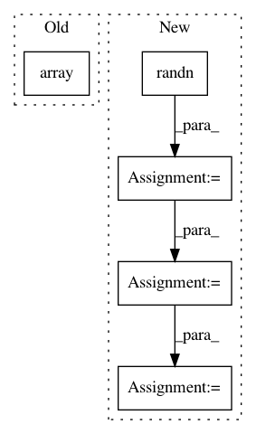

88cd16a4e3c70d82567c96c1ffc277ef8ea87a3f,pymc3/tests/test_hmc.py,,test_leapfrog_reversible,#,14
Before Change
q, p = q0, p0
q, p, _ = step.leapfrog(q, p, floatX(np.array(epsilon)), np.array(n_steps, dtype="int32"))
q, p, _ = step.leapfrog(q, -p, floatX(np.array(epsilon)), np.array(n_steps, dtype="int32"))
close_to(q, q0, precision, str((n_steps, epsilon)))
close_to(-p, p0, precision, str((n_steps, epsilon)))
After Change
np.random.seed(42)
start, model, _ = models.non_normal(n)
size = model.ndim
scaling = floatX(np.random.randn(size) ** 2)
step = BaseHMC(vars=model.vars, model=model, scaling=scaling)
step.integrator._logp_dlogp_func.set_extra_values({})
p = floatX(step.potential.random())
q = floatX(np.random.randn(size))
start = step.integrator.compute_state(p, q)
precision = select_by_precision(float64=1E-8, float32=1E-4)
for epsilon in [.01, .1, 1.2]:
for n_steps in [1, 2, 3, 4, 20]:
state = start
for _ in range(n_steps):
state = step.integrator.step(epsilon, state)
for _ in range(n_steps):
state = step.integrator.step(-epsilon, state)
close_to(state.q, start.q, precision, str((n_steps, epsilon)))
close_to(state.p, start.p, precision, str((n_steps, epsilon)))
In pattern: SUPERPATTERN
Frequency: 3
Non-data size: 5
Instances
Project Name: pymc-devs/pymc3
Commit Name: 88cd16a4e3c70d82567c96c1ffc277ef8ea87a3f
Time: 2017-07-18
Author: adrian.seyboldt@gmail.com
File Name: pymc3/tests/test_hmc.py
Class Name:
Method Name: test_leapfrog_reversible
Project Name: tensorly/tensorly
Commit Name: 8c271d54da8f609c9b56e9d0ab98d453b3e4f81c
Time: 2021-03-08
Author: taylorpatti@g.harvard.edu
File Name: tensorly/metrics/tests/test_entropy.py
Class Name:
Method Name: test_vonNeumann_entropy_pure_state_CP
Project Name: tensorly/tensorly
Commit Name: 8c271d54da8f609c9b56e9d0ab98d453b3e4f81c
Time: 2021-03-08
Author: taylorpatti@g.harvard.edu
File Name: tensorly/metrics/tests/test_entropy.py
Class Name:
Method Name: test_vonNeumann_entropy_pure_state